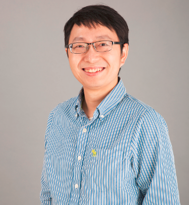

Meng YuI'm a Principle Research Scientist at Tencent AI Lab since 2016. From 2013 to 2016, I worked as a staff research engineer on audio/speech enhancement for voice communication and improved speech recognition in Audience (a Knowles Company). I was a software engineer working on speaker segmentation and recognition in Cisco from 2012 to 2013. I received my B.S. in Mathematics from Peking University, Beijing, China in 2007, and a Ph.D. degree in Mathematics from University of California, Irvine, CA, USA in 2012. My research interests are in audio/speech processing and related fields, particularly in single and multi-channel speech enhancement, dereverberation, echo cancellation and other far field frontend speech enhancement applications; deep learning based speech enhancement and separation (cocktail party problem); and their joint optimization with keyword spotting, speaker recognition and acoustic modeling of speech recognition. I serve as a reviewer for ICASSP, Interspeech, IEEE Workshop on Application of Signal Processing to Audio and Acoustics (WASPAA), IEEE Digital Signal Processing Workshop, IEEE /ACM Transactions on Audio, Speech and Language Processing, EURASIP Journal on Audio, Speech, and Music Processing, Journal of Computer Science and Technology, ACM Multimedia, Speech communication, Communications in Mathematical Sciences, etc. Email: mraymondyu AT gmail.com Linkedin: Click here CV: Click here Google Scholar: Click here Selected Publications[17] MetricNet: Towards Improved Modeling For Non-Intrusive Speech Quality Assessment, M Yu, C Zhang, Y Xu, S Zhang, D Yu, arXiv preprint arXiv:2104.01227 [16] Towards Robust Speaker Verification with Target Speaker Enhancement, C Zhang, M Yu, C Weng, D Yu, ICASSP, 2021 [15] ADL-MVDR: All deep learning MVDR beamformer for target speech separation, Z Zhang, Y Xu, M Yu, SX Zhang, L Chen, D Yu, ICASSP, 2021 [14] An overview of deep-learning-based audio-visual speech enhancement and separation, D Michelsanti, ZH Tan, SX Zhang, Y Xu, M Yu, D Yu, J Jensen, IEEE/ACM Transactions on Audio, Speech, and Language Processing, 2021 [13] Speaker-Aware Target Speaker Enhancement by Jointly Learning with Speaker Embedding Extraction, X. Ji, M. Yu, C. Zhang, D. Su, T. Yu, X. Liu, and D. Yu, ICASSP, 2020 [12] End-to-End Multi-Look Keyword Spotting, M Yu, X Ji, B Wu, D Su, D Yu, Interspeech 2020 [11] Integration of Multi-Look Beamformers for Multi-Channel Keyword Spotting, X. Ji, M. Yu, J. Chen, J. Zheng, D. Su and D. Yu, ICASSP, 2020 [10] A Unified Framework for Speech Separation, F Bahmaninezhad, SX Zhang, Y Xu, M Yu, JHL Hansen, D Yu, arXiv preprint arXiv:1912.07814 [09] Time domain audio visual speech separation, J. Wu, Y Xu, SX Zhang, LW Chen, M. Yu, L. Xie, D. Yu, ASRU, 2019 [08] Overlapped speech recognition from a jointly learned multi-channel neural speech extraction and representation, B. Wu, M. Yu, L. Chen, C. Weng, D. Su and D. Yu, arXiv:1910.13825, 2019 [07] DurIAN: Duration Informed Attention Network For Multimodal Synthesis, C. Yu, H. Lu, N. Hu M. Yu, C. Weng, K. Xu, P. Liu, D. Tuo, S. Kang, G. Lei, D. Su and D. Yu, arXiv preprint arXiv:1909.01700, 2019 [06] A comprehensive study of speech separation: spectrogram vs waveform separation, F. Bahmaninezhad, J. Wu, R. Gu, S. Zhang, Y. Xu, M. Yu, and D. Yu, arXiv:1905.07497, Interspeech, 2019 [05] Seq2Seq Attentional Siamese Neural Networks for Text-dependent Speaker Verification, Y. Zhang, M. Yu, N. Li, C. Yu, J. Cui and D. Yu, ICASSP, 2019 [04] Multi-band PIT and Model Integration for Improved Multi-channel Speech Separation, L. Chen, M. Yu, Y. Qian, D. Su, and D. Yu, ICASSP, 2019 [03] Text-Dependent Speech Enhancement for Small-Footprint Robust Keyword Detection, M. Yu, X. Ji, Y. Gao, L. Chen, J. Chen, J. Zheng, D. Su, and D. Yu, Interspeech, 2018 [02] Speech Dereverberation by Constrained and Regularized Multi-Channel Spectral Decomposition, M. Yu and F. K. Soong, REVERB Challenge workshop, 2014 [01] Multi-channel L1 regularized convex speech enhancement model and fast computation by the split Bregman method, M. Yu, W. Ma, J. Xin and S. Osher, IEEE Tran. on Audio, Speech and Language Proc., 20(2), pp. 661-675, 2012 |